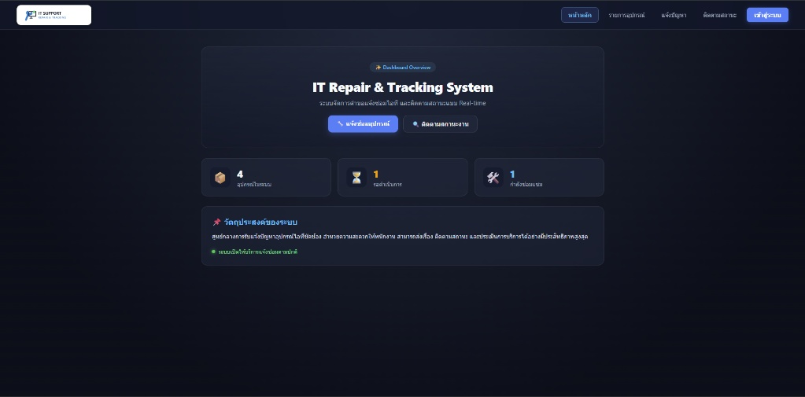
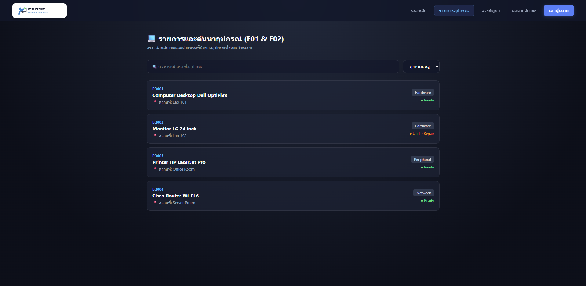
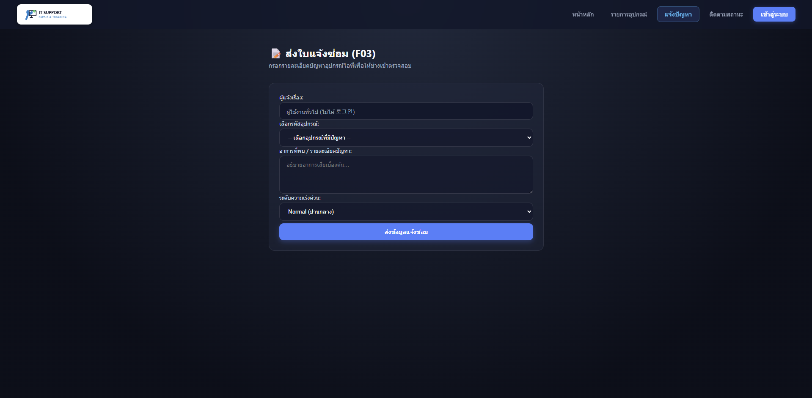
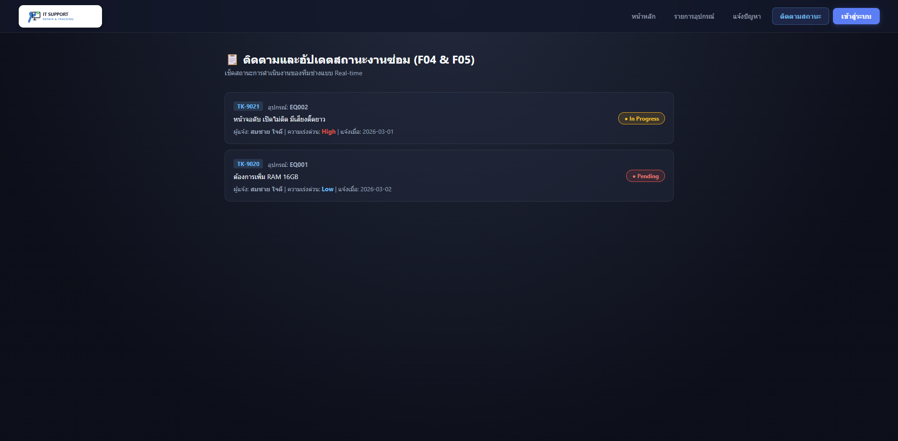
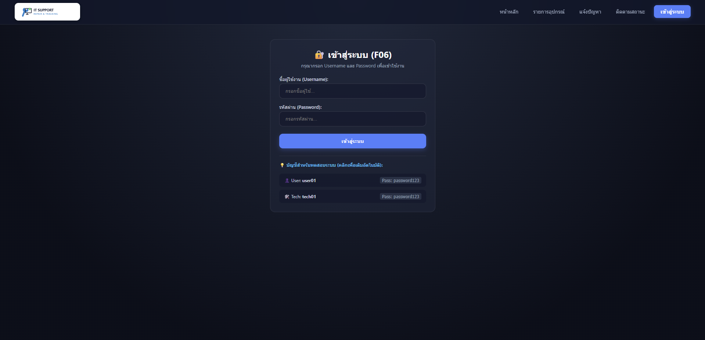

(Online IT Support and Equipment Repair Tracking System)
ผู้จัดทำ:
• นายนิธิศ สุขอยู่ (รหัส 67122250033)
• นายจิตติพัฒน์ จัยสวัสดิ์ (รหัส 67122250011)
เสนอ:
• ผู้ช่วยศาสตราจารย์ ดร. เสถียร จันทร์ปลา
รายวิชา CSD3202 การพัฒนาเว็บแอปพลิเคชัน | สาขาวิชาวิทยาการคอมพิวเตอร์ คณะวิทยาศาสตร์และเทคโนโลยี
มหาวิทยาลัยราชภัฏสวนสุนันทา (ภาคเรียนที่ 1 ปีการศึกษา 2569)





equipment: เก็บข้อมูลอุปกรณ์ (EQ001, EQ002...) พร้อมสถานะ เช่น Ready, Under Repairusers: เก็บข้อมูลผู้ใช้งาน และจำแนกสิทธิ์การใช้งาน (Admin, Technician, User)repair_tickets: เก็บข้อมูลใบแจ้งซ่อม (TK001...) ผูกกับ `equipment_id` และ `user_id`ขอบคุณครับ / มีข้อเสนอแนะเพิ่มเติมไหมครับ
ผู้จัดทำ: นายนิธิศ สุขอยู่ & นายจิตติพัฒน์ จัยสวัสดิ์
สาขาวิชาวิทยาการคอมพิวเตอร์ มหาวิทยาลัยราชภัฏสวนสุนันทา